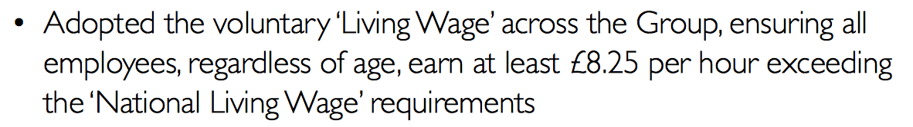

In a world where zero hour contracts and minimum wage and low paid workers are seen as bad words to be associated with, it's no doubt that in their last annual investors report the Go-Ahead Group wanted to show how well they were doing in this area, by claiming they pay all their employees a minimum of £8.25 across all their Group companies.
That's great publicity isn't it? And draws in those ethical investors who want to see that workers get paid a fair wage for the work they have to do.
Companies paying above the minimum wage (which at the time of writing was up to £7.20 an hour based on age), get good positive press by paying above this figure. Those that go as far as the guidance from the Living Wage Foundation and pay £8.45/hour across the UK, and £9.75/hour in London are doing even better.
I have documented Govia Southeastern's Apprenticeship pay rates on my own personal blog, as well as the rail group sites that I'm involved with.
Govia Southeastern (a subsiduary of Go-Ahead Group - who own 65% of the group, with the other 35% owner by French rail operator Keolis) has, at least twice, in the past 18 months placed adverts for 'Apprentices' at rates of under £4 an hour.
I've previously written articles about this:
- 28 August 2015 - Where apprentices were being paid £3 an hour, also covered by the Evening Standard
- 19 April 2016 - Where apprentices were being paid £3.57 an hour for what seemed like a glorified receptionist/PA/admin role, wrapped up as an 'Apprenticeship'
- 5 September 2016 - When I claimed that I was blocked by Southeastern for calling them and their parent company liars for their claims about paying everyone at least £8.25/hour
Remember, that Go-Ahead Group turned a profit of nearly £100m in their last financial year, of which their operating profit from their ownership of their 3 UK rail subsiduaries came to £57m, so it's fair to expect them to pay their staff, from Apprentices up to their CEO who received at least £1.3m, a fair wage. Isn't it?
Well, they are, well at least that's what they have claimed to their investors as part of their annual report:
The right to reply
Obviously with the work that I've done in the past, and the posts I've written, I immediately questioned that part of the report. The previous year they had a disclaimer saying it didn't include apprentices. This year, no disclaimer. I looked hard for it and didn't see it, so I contacted their PR people with the following query:
Sent to Go-Ahead Group, 5th September 2016
Hi,
In your recent results you state this:
"Adopted the voluntary "Living Wage" across the Group, ensuring all employees, regardless of age, earn at least £8.25 per hour exceeding the "National Living Wage" requirements"
Personally, and as part of one of the rail groups I founded - Southeastern Railway Action Group, I have followed the Southeastern apprenticeship scheme were young employees are paid an hourly rate of £3.57 or lower.
Would I be wrong to make my claims back in April this year, and August last year (also covered by the Evening Standard) - or have Govia Southeastern found it within their hearts/bonus packets to pay young people correctly?
I have covered this in my latest blog post this evening - http://philrogers.me/0905naughty-step - and would be happy to post any correction or feedback from yourselves regarding this matter.
Regards,
Phil Rogers
Founder - Southeastern Railway Action Group
Co-founder - Dartford Rail Travellers' Assocation
they responded by passing on the question to Southeastern:
Received from Go-Ahead Group, 7th September 2016
Dear Mr Rogers
I write to acknowledge receipt of your email, which has been received by David Brown's office.
The Go-Ahead Group has a devolved management approach with our subsidiary companies, therefore, your letter has been forwarded to Southeastern Railway to record, investigate and respond to accordingly.
I am sorry that you have had to email Go-Ahead but please be assured that your concerns will be progressed and responded to by Southeastern Railway as quickly as possible.
Yours sincerely
[redacted]
Communications
The Go-Ahead Group plc
...this felt to me as if they were dusting their hands of the problem, and putting into the hands of their 'subsidiary' - one that is part of their group. The group that is claiming to pay "all employees, regardless of age, earn at least £8.25 per hour"
Southeastern then responded with a very carefully worded email. Whilst I acknowledge that Southeastern have a standard boilerplate disclaimer on their emails, I will post their response, and subsequent ones, as is - I believe that misleading investors is far more important than hiding behind a disclaimer, and happy to provide an update should Govia Southeastern choose to answer the question put to them.
Received from Southeastern, 12th September 2016
Dear Mr Rogers
Thank you for your email addressed to the Go Ahead Group. It's been passed to Southeastern for response as your query about the apprenticeship scheme concerns our company.
Our apprenticeship scheme is approved by the Government, and trainees receive class room and practical training while shadowing station and other operational staff. They're not permanent employees, and don't carry out functions or roles that would be undertaken by trained staff. However, they receive the same benefits as full time staff - including complimentary duty and leisure rail travel, as well as the opportunity to contribute to our final salary pension scheme.
On graduation, the overwhelming majority go on to full-time permanent roles within Southeastern. All of these are on salaries in excess of the National Living Wage.
Thank you for your interest and for taking the time to get in touch.
Yours sincerely
[redacted]
Senior Customer Relations Officer
Southeastern
The "Customer Relations Officer" explicitly calls out Apprentices as 'not permanent employees', but that they receive the same benefits as full time staff.
Let's examine Go-Ahead Group's claim yet again:
Their claim is that all employees, regardless of age, earn at least £8.25 per hour. Whilst not 'permanent employees', they are employed by Southeastern, and as such receive the same benefits (as required by law, unless they were contractors, but that is something beyond the scope of this article)
Can Southeastern clarify?
I gave the "Customer Relations Officer" a chance to clarify what he was saying:
Sent to Southeastern, 12th September 2016
Hi [redacted],
With respect, your email does not answer the question that I put to Go-Ahead group:
In their current annual report they claim:
"We are pleased to have introduced the voluntary "Living Wage" across the Group, ensuring all employees, regardless of age, earn at least £8.25 per hour, exceeding the government's "National Living Wage" requirements. However, voluntary Living Wage recommended-increases in future years could add to wage inflation, so we will always continue to review this."
I draw your attention to 'all employees' - where no discrimination has been made to permanent/temporary/apprentice, as has been in previous annual reports from your parent company.
Are you able to answer the question clearly: Are Southeastern apprentices paid at least £8.25 per hour?
Regards,
Phil
A further chance to correct
I had a busy September for various reasons, so didn't get a chance to put my findings out to the wider world - so gave Go-ahead group a chance to also clarify Southeastern's response
Sent to Go-Ahead Group, 19th September 2016
Hi,Go-Ahead group didn't respond, however Southeastern did, with the most terse response I've had from them to date:
I received a response from Southeastern who have skirted around the question about how much their apprentices are being paid, instead noting they aren't 'permanent employees', but that they will go on to earn a higher wage once they have completed their apprenticeship.
This obviously flies in the face of what you have told your investors.
I have a lot on my plate at the moment with family health issues, so have been unable to write up an article for the press - so I will afford you some time to properly investigate this, and ensure our young adults are paid the rate that you have claimed to your investors.
If I do not hear from you then I will endeavour to find time to write up a piece about this - it's not right that you're portraying yourselves as 'Living Wage' employees across all companies, when, in fact, through your Southeastern subsiduary you are not.
Received from Southeastern, 12th October 2016
Dear Mr Rogers.
Thank you for taking the time to contact us with reference to the Living Wage requirements..
If you feel your concerns haven't been dealt with satisfactorily, you can contact Transport Focus. They're a statutory body set up to protect the interests of rail users. Their contact details are.
[Transport Focus details removed for brevity]
Thank you for taking the time to contact us.
I've clearly rattled their cage, I doubt they are paying their apprentices at least £8.25 per hour as their parent company claims
As a result of the evidence above, I will make this claim:
Go-Ahead group are now knowingly lying to their Investors
They have been given the chance to respond, and to put things right. You can't pass this off to be answered from the subsiduary company, and ignore their response and follow up.
Go-Ahead are complicit in the pay that Southeastern are paying their apprentices, and capitalising on the goodwill of investors that want to invest in a company that pays staff fairly, especially given the profits that the company returned last year
What could Go-Ahead group do?
Well, their investor communications are obviously wrong as of 2nd September for the year ending 2nd July 2016 when they were published - unless by some twist of fate, Southeastern did pay their Apprentices fairly
...and if they have changed their stance on Apprentice pay, then surely they would be shouting about it? And pointing it out to me in their response, in the style that Govia normally do when they tell me I'm wrong.
So based on the balance of facts, let's assume they haven't changed their Apprentice pay. Since Southeastern never does anything to dent their profits. What could happen?
The easy solution is to back-pay these hard working Apprentices to, at the latest, 1st July 2016 a rate of at least £8.25 an hour, and to apologise to investors for misleading them
This article from 2015 says that Southeastern have recruited 45 apprentices since 2010, so with 10 apprentices a year, working 37 hours a week, for 52 weeks a year, originally paid £3.57/hour - that'd be an extra salary cost per apprentice of just over £9000 a year, so denting their profit by just under £100k a year to meet their claims to investors. Not much of a price to pay to be shown to be telling the truth, is it?
But will they? That's where you come in...
Share this story
Share this story widely and get the awareness out there
With their shoddy treatment of the Southern franchise, and workers, Go-Ahead group are already 'in the dock' for their practices.
This is yet another failing for the people that serve them, and that they serve, as well as their investors
If you'd like to follow this up on your site then please link to the original article. Press - please email me at govia-feedback@philr.me and I'll get back to you as soon as I can
About this site
This site was yet another random domain purchase, and is a work in progress. If I get the time, or the stories (that I can verify!) it will serve to be a place to highlight the lies, mismangement or mistreatment of people, and customers in the UK Rail industry.
It's time that these practices are brought to the wider audience
About the author - Phil Rogers
I'm just a regular commuter, that wants to get to and from work on time, and a campaigner for good
I cofounded the Dartford Rail Travellers' Association, and started Southeastern Rail Action Group in response to the ever deteriorating service provided by Govia Southeastern.